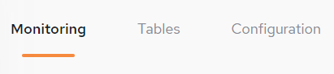

Click the Pipeline name to view additional details of the pipeline.
Three tabs are available: Monitoring, Tables, and Configuration:

The Monitoring tab shows a variety of real-time pipeline metrics.
Monitoring time select drop-down – Select the time-frame for the tables showing various statistics.
Ops/Sec over time – The average number of operations per second.
Extra Details – By clicking on the graph, additional details are displayed.
There is also additional monitoring available which displays any Errors over time
Errors over time – The average number of errors per second
The Tables pipeline tab shows details of the object types in the pipeline.
SPACE TYPE – Name of the Space. This is initially the same as the source table name in the System of Record, but can be changed when the pipeline is defined.
SOURCE_TABLE – The name of the source table in the System of Record. This will be the same as the Object Type field, unless you changed the Object Type name when you defined the pipeline.
DAILY OPERATIONS – The number of daily CRUD operations performed on the table
DAILY ERRORS – The number of daily CRUD operations with errors performed on the table
LAST UPDATED – The date that the pipeline configuration was created or updated
Click the Space type name to see details of the table.
The Property tab appears as follows:
Name – Name of the object property (column)
Type – Data type of the object property
The Indexes tab appears as follows:
NAME – Name of the index
TYPE – Index type
PROPERTIES – The object properties that comprise the index
UNIQUE – Indicates if unique or non-unique values are allowed for the index
The Configuration tab shows pipeline configuration information. The data is read-only when the pipeline is running.
If a Pipeline has been configured but it has not been started yet (i.e. Inactive state), it can be also be started from here by clicking Start...

If the Pipeline has been started (i.e. running state) then it can be also stopped from here by clicking Stop.
For information about Pipeline configuration refer to